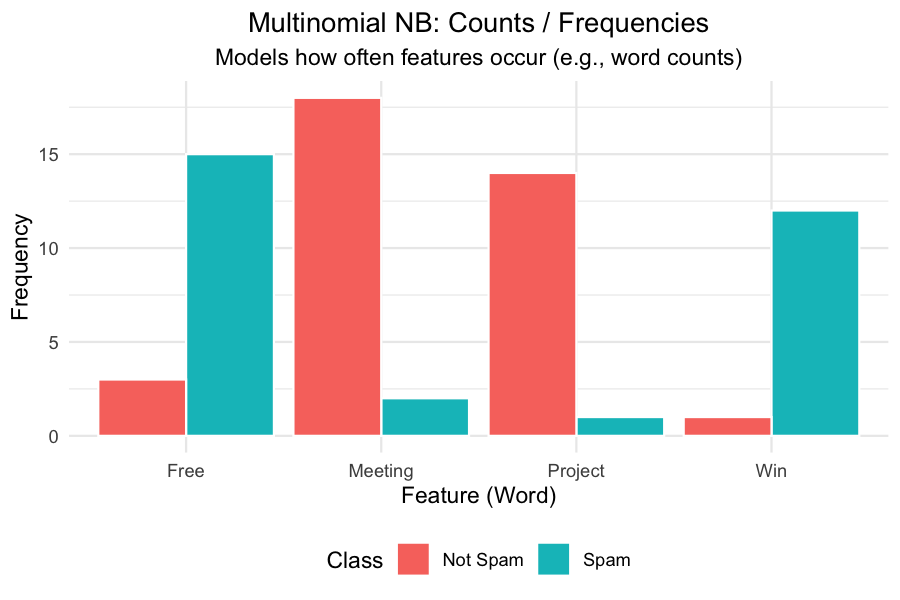
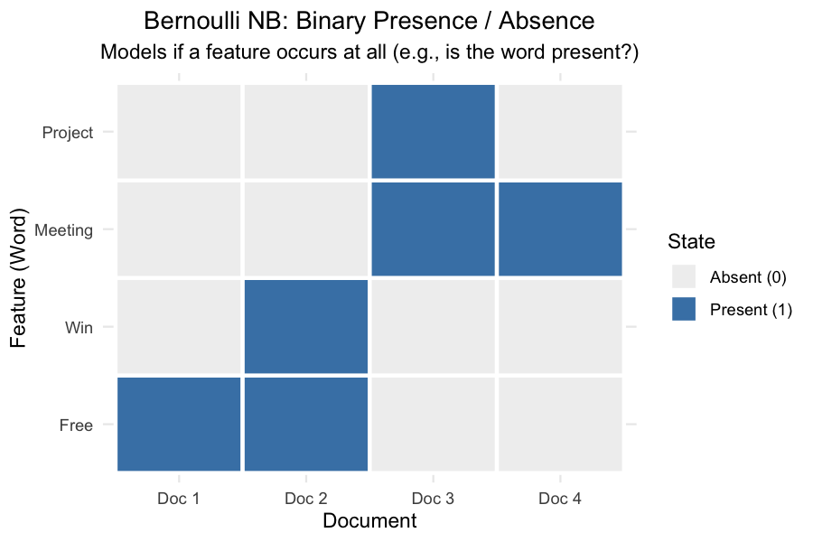
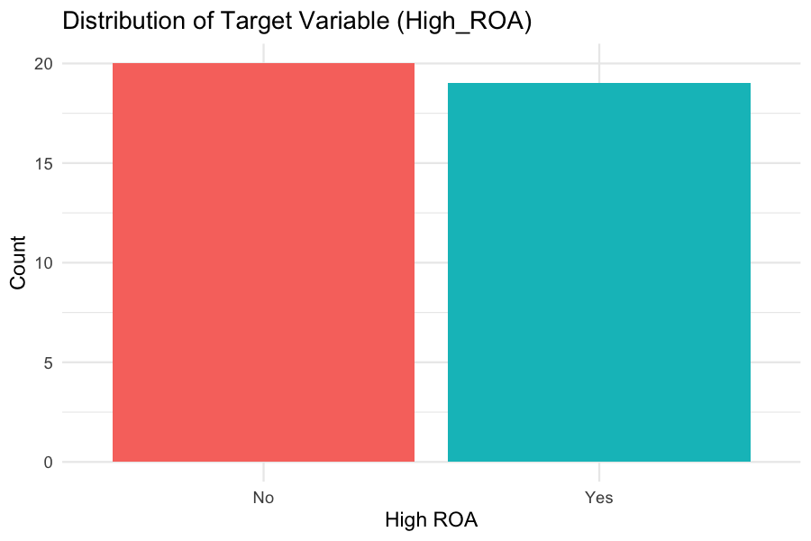
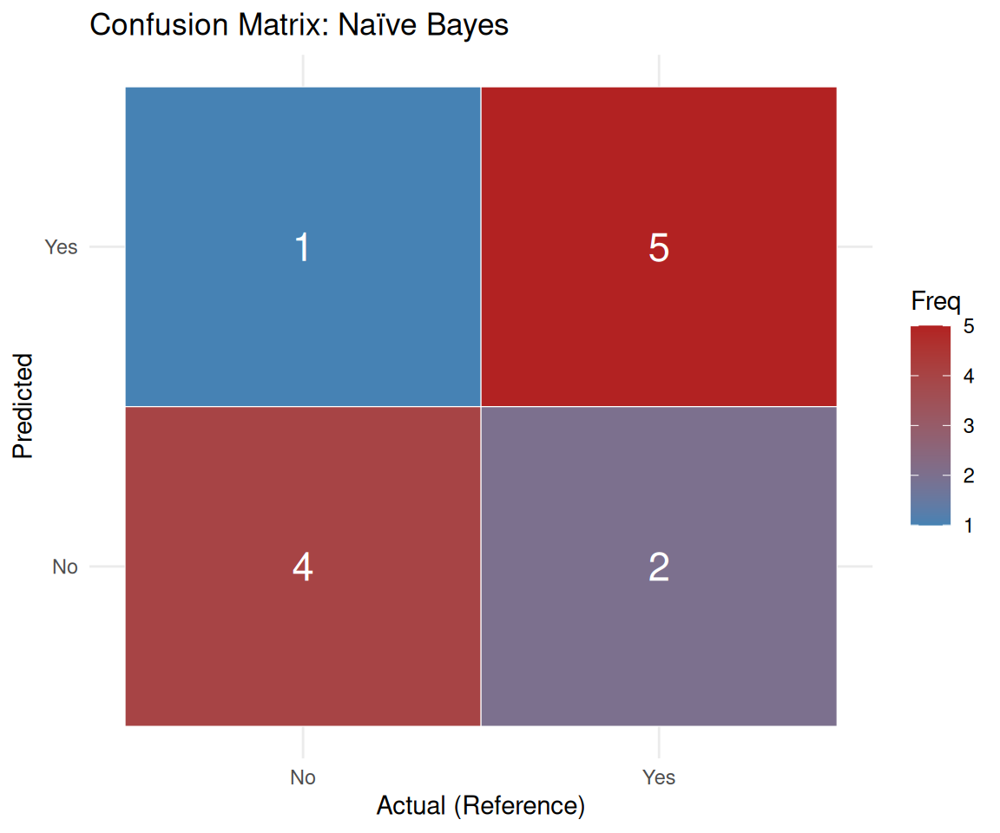

Naive Bayes is a supervised machine learning algorithm based on Bayes’ Theorem. It is used for predicting which category a new observation belongs to based on its features. Naive Bayes is simple and effective. It is widely used in spam filtering, sentiment analysis, and medical diagnosis.
The “naive” part of the name comes from the assumption that all features are conditionally independent of each other given the target class. In reality, features are rarely perfectly independent (e.g., Revenue and Total Assets are highly correlated), but the algorithm often performs well even when this assumption is violated.
Naive Bayes calculates the probability of each class given the input features and assigns the observation to the class with the highest probability.
Multinomial vs. Bernoulli Naive Bayes
Multinomial Naive Bayes is designed for discrete data that represents counts or frequencies. It is the standard version used in text classification, where the features are the frequencies of words in a document. In this project, it is applied to categorical data.

Conceptual difference between Multinomial and Bernoulli Naïve Bayes
Bernoulli Naive Bayes is designed for binary data (0 or 1, True or False). It models the presence or absence of a feature. For example, in spam filtering, it would look at whether specific words (like “free” or “win”) appear in an email, rather than how many times they appear.

Naïve Bayes classifies by calculating conditional probabilities
Data Prep
Supervised learning requires labeled data. For Naive Bayes, the data is first converted into a format the algorithm can use.
Labeled Data: A binary target variable, High_ROA, is first created. If a company’s ROA is above the median, it is labeled “Yes”; otherwise, it is labeled “No”.
Categorical Features: Standard Multinomial Naïve Bayes works with discrete categories. The continuous features (Revenue, Assets, Debt, Volatility, Beta) are grouped into three categories: Low, Medium, and High.
Train/Test Split: To properly evaluate the model, the data are splitted into:
Training Set (70%): The model learns the probabilities from this data.
Testing Set (30%): The model is evaluated on this unseen data to measure how well it generalizes.
70% of the companies are randomly assigned to the training set while the remaining percentage is used for testing. These sets must be disjoint to prevent data leakage. If we tested the model on the same data it trained on, it could simply memorize the answers, and we wouldn’t know if it generalizes to new, unseen companies. The summary is shown below:
Train/Test split summary

Distribution of the target variable
Code
The R code below trains a Multinomial Naive Bayes classifier using the e1071 package.
Code
library(readr)library(dplyr)library(e1071)library(caret)# Load the disjoint setstrain_df <-read_csv("data/clean/nb_train.csv", show_col_types =FALSE)test_df <-read_csv("data/clean/nb_test.csv", show_col_types =FALSE)# Ensure target is a factor for classificationtrain_df$High_ROA <-as.factor(train_df$High_ROA)test_df$High_ROA <-as.factor(test_df$High_ROA)# Train the model (excluding the ticker column)nb_model <-naiveBayes(High_ROA ~ . - ticker, data = train_df)# Predict on the test setpredictions <-predict(nb_model, test_df)# Confusion Matrixcm <-confusionMatrix(predictions, test_df$High_ROA)
Results
The model is evaluated using a Confusion Matrix, which shows how many companies were correctly and incorrectly classified.
Reference
Prediction No Yes
No 4 2
Yes 1 5
Accuracy: 75.0%
Visualizing the Confusion Matrix

Confusion Matrix Heatmap
The confusion matrix shows that the model correctly identified 5 companies with High ROA and 4 companies with Low ROA.
Conclusions
By grouping the continuous financial variables and defining a binary target (High_ROA), the exploratory dataset was transformed into a supervised learning problem.
Naive Bayes handles small datasets well, but its independence assumption is severely tested. Here, Revenue and Assets are highly correlated, which violates the core “naïve” assumption.
Splitting 40 companies into 28 training and 12 testing instances leaves very little data to learn from, making the model highly sensitive to the specific random split.
The model shows that financial characteristics do contain signal about a company’s profitability. However, because standard Naive Bayes struggles with continuous data, more advanced methods like decision trees are likely to perform better on this specific dataset. Regardless, Naive Bayes is a great starting point for classification.
Source Code
---title: "Naive Bayes"---# Overview**Naive Bayes** is a supervised machine learning algorithm based on Bayes' Theorem.It is used for predicting which category a new observation belongs to based on its features.Naive Bayes is simple and effective. It is widely used in spam filtering, sentiment analysis, and medical diagnosis.The "naive" part of the name comes from the assumption that all features are conditionally independent of each other giventhe target class. In reality, features are rarely perfectly independent(e.g., Revenue and Total Assets are highly correlated), but the algorithm often performs well even when this assumptionis violated.Naive Bayes calculates the probability of each class given the input features and assigns the observation to the classwith the highest probability.## Multinomial vs. Bernoulli Naive Bayes**Multinomial Naive Bayes** is designed for discrete data that represents **counts or frequencies**.It is the standard version used in text classification, where the features are the frequencies of words in a document.In this project, it is applied to categorical data.**Bernoulli Naive Bayes** is designed for **binary data** (0 or 1, True or False).It models the presence or absence of a feature. For example, in spam filtering, it would look at whether specific words(like "free" or "win") appear in an email, rather than how many times they appear.# Data PrepSupervised learning requires labeled data.For Naive Bayes, the data is first converted into a format the algorithm can use.- **Labeled Data:** A binary target variable, `High_ROA`, is first created. If a company's ROA is above the median, it is labeled "Yes"; otherwise, it is labeled "No".- **Categorical Features:** Standard Multinomial Naïve Bayes works with discrete categories.The continuous features (Revenue, Assets, Debt, Volatility, Beta) are grouped into three categories: Low, Medium, and High.- **Train/Test Split:** To properly evaluate the model, the data are splitted into: - **Training Set (70%):** The model learns the probabilities from this data. - **Testing Set (30%):** The model is evaluated on this unseen data to measure how well it generalizes.## The Labeled DatasetThe full labeled dataset is stored at: [`naive_bayes_data.csv`](data/clean/naive_bayes_data.csv).## Train/Test Split70% of the companies are randomly assigned to the training set while the remaining percentage is used for testing.These sets must be **disjoint** to prevent data leakage.If we tested the model on the same data it trained on,it could simply memorize the answers, and we wouldn't know if it generalizes to new, unseen companies.The summary is shown below:# CodeThe R code below trains a Multinomial Naive Bayes classifier using the `e1071` package.```{r}#| label: nb-code#| echo: true#| message: false#| warning: falselibrary(readr)library(dplyr)library(e1071)library(caret)# Load the disjoint setstrain_df <-read_csv("data/clean/nb_train.csv", show_col_types =FALSE)test_df <-read_csv("data/clean/nb_test.csv", show_col_types =FALSE)# Ensure target is a factor for classificationtrain_df$High_ROA <-as.factor(train_df$High_ROA)test_df$High_ROA <-as.factor(test_df$High_ROA)# Train the model (excluding the ticker column)nb_model <-naiveBayes(High_ROA ~ . - ticker, data = train_df)# Predict on the test setpredictions <-predict(nb_model, test_df)# Confusion Matrixcm <-confusionMatrix(predictions, test_df$High_ROA)```# ResultsThe model is evaluated using a **Confusion Matrix**, which shows how many companies were correctly and incorrectly classified.```{r}#| label: nb-cm#| echo: false#| message: false#| warning: falsecm$table``````{r}#| label: nb-accuracy#| echo: falsecat(sprintf("Accuracy: %.1f%%\n", cm$overall["Accuracy"] *100))```## Visualizing the Confusion Matrix```{r}#| label: nb-plot#| fig-cap: "Confusion Matrix Heatmap"#| fig-width: 6#| fig-height: 5#| echo: false#| warning: falselibrary(ggplot2)library(reshape2)cm_df <-as.data.frame(cm$table)colnames(cm_df) <-c("Prediction", "Reference", "Freq")ggplot(data = cm_df, mapping =aes(x = Reference, y = Prediction, fill = Freq)) +geom_tile(color ="white") +geom_text(aes(label = Freq), size =6, color ="white") +scale_fill_gradient(low ="steelblue", high ="firebrick") +labs(title ="Confusion Matrix: Naïve Bayes",x ="Actual (Reference)",y ="Predicted") +theme_minimal()```The confusion matrix shows that the model correctly identified 5 companies with High ROA and 4 companies with Low ROA. # Conclusions1. By grouping the continuous financial variables and defining a binary target (`High_ROA`),the exploratory dataset was transformed into a supervised learning problem.2. Naive Bayes handles small datasets well, but its independence assumptionis severely tested. Here, Revenue and Assets are highly correlated, which violates the core "naïve" assumption.3. Splitting 40 companies into 28 training and 12 testing instances leaves very little data to learn from, making the model highly sensitive to the specific random split.The model shows that financial characteristics do contain signal about a company's profitability.However, because standard Naive Bayes struggles with continuous data,more advanced methods like decision trees are likely to perform better on this specific dataset.Regardless, Naive Bayes is a great starting point for classification.